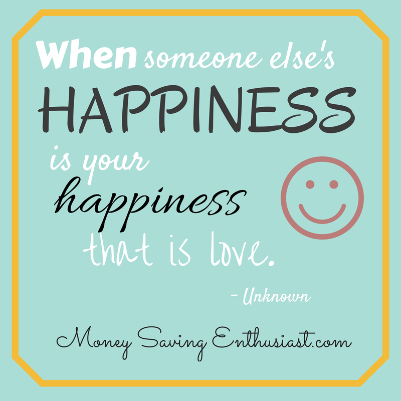

<!DOCTYPE html>
<HTML><TITTLE> </TITTLE></HTML> 
<HEAD>

<BODY>
<HEADER>
<a href="index.html">
 
</a>
</HEADER>
<HR>
<NAV>
<TABLE CELLSPACING="6"  CELLPADDING="6">
<TR>
<TD> <a href="../index.html"> HOME </TD>
<TD> <a href="articles.html"> ARTICLES </TD>
<TD> <a href="../habits.html"> HABITS </TD>
<TD> <a href="../skills.html"> SKILLS </TD>
<TD> <a href="../quotes.html"> QUOTES </TD>
<TD> <a href="../books.html"> BOOKS </TD>
</TR>
</TABLE>
</NAV>


<HR>
<skills>
<HEADER><H2>Enthusiast</H2></HEADER>
<p>An enthusiast is a person who is very interested in a particular activity or subject and who spends a lot of time on it. 
When you're an enthusiast, you're all jazzed up about a person or cause. A sports enthusiast is someone who is really passionate and excited about sports.
 A candidate running for office will have a group of enthusiasts working doggedly on his campaign.</p>

<p>How to More Enthusiastic?</p>
<p> – 9 Tips</p>
<p>1. Think about the importance of your goal:</p>

<p>Think about the importance of your goal and what it means to you.

Devote 10 minutes a day to read and think about the benefits of what you want to do or accomplish.

When you are aware of the importance of a goal or task it’s easier to awaken motivation.</p>

<p>2. Read about people who achieved success:</p>


<p>Every day, find at least a few minutes to read about people who achieved success by being tenacious and persistent.

You can find many books and articles about this topic on the Internet and in bookstores.</p>

<p>3. Visualize yourself acting with enthusiasm and motivation:</p>

<p>Find a quiet place, and for several minutes visualize yourself acting with enthusiasm and motivation. Do so every day.

Make the mental scene as real as possible, and most importantly, in your imagination, feel enthusiastic. Feel the energy and the zest that are awakening within you.</p>

<p>4. Do not give up:</p>

<p>Do not give up easily. Continue with what you are doing, even if you have lost your enthusiasm. Put more focus and attention. Sometimes, continuing with your project with perseverance, reawakens energy, enthusiasm and motivation.<br>

Remember, every success requires dedication, time, perseverance and tenacity.</p>

<p>5. Stay patient and persistent:</p>

There is a well known story about a gold prospector, who, after digging to some depth, did not find anything. He gave up and went away. Then, someone else came, and after digging just a few inches more, struck gold.

What do we learn from this story?<br>
 You need to be patient and persistent, even if you see no progress, because success might be just a few inches away.</p>

<center></center>

<p>6. Repeating affirmations:</p>

<p>Keep repeating affirmations. They empower you and inflame your enthusiasm and motivation.

Here are a few example:</p>

<p>“My motivation and enthusiasm are growing more and more every day.”</p>

<p>“I have the energy, desire and persistence to continue with my plans.”</p>

<p>7. Nothing is drudgery:</p>

<p>Never consider what you are doing as a drudgery.

With a little planning and few changes you can turn every activity into a pleasurable activity. Even the most boring task can become enjoyable with the right approach and state of mind.</p>

<p>8. Do not give up</p>

<p><li>Once you decide about anything, go on with it, even if you lose enthusiasm and desire on the way.</p></li>

<p><li>Do not give up, even if what you are doing seems to be like a burden and drudgery.<br>

<p><li>Don’t give up, even if you feel bored.<br>

<p><li>Keep thinking about the benefits of what you are doing, and continue visualizing in your mind’s eye, how your life will be like after accomplishing what you have set out to do. This will keep the fire of enthusiasm alive.</p>

<p>9. Enthusiastic friends:<br>

<p>Find a friend, or better still, a group of people who are enthusiastic about a shared topic, like losing weight, exercising, learning a new language or anything else that interests you.
 A group Always remember, this is your life, and you are responsible for it. </p>

<head>
<tittle>  </tittle>
<style>  


<head>
<tittle>  </tittle>
<style>  
/*csss goes here*/

a{
text-decoration:none;
display:inline-block;
padding:8px 16px;
}

a:hover{
background-color:#ddd;
color:black;
}

.Back
background-color:#f1f1f1;
color:black;
border-radius:5px;
}


</style>

<body>
<center>
<form>
    <input type="button" value="Go back!" onclick="history.back()">
</form>

</center>
</body>


</head>
</html>

</TR>
</TD>
</TABLE>

</skills>


<HR>
<FOOTER>
<a href="https://www.youtube.com/results?search_query=BEST+motivation+">
</a><br/>
 Motivation For Life.LOVE 2022
</FOOTER>

<Style>
body
{
 background="pic.jpg">
url('img_pic.jpg');
}
</style>

</HEAD>
</BODY>


</HEAD>
</BODY>